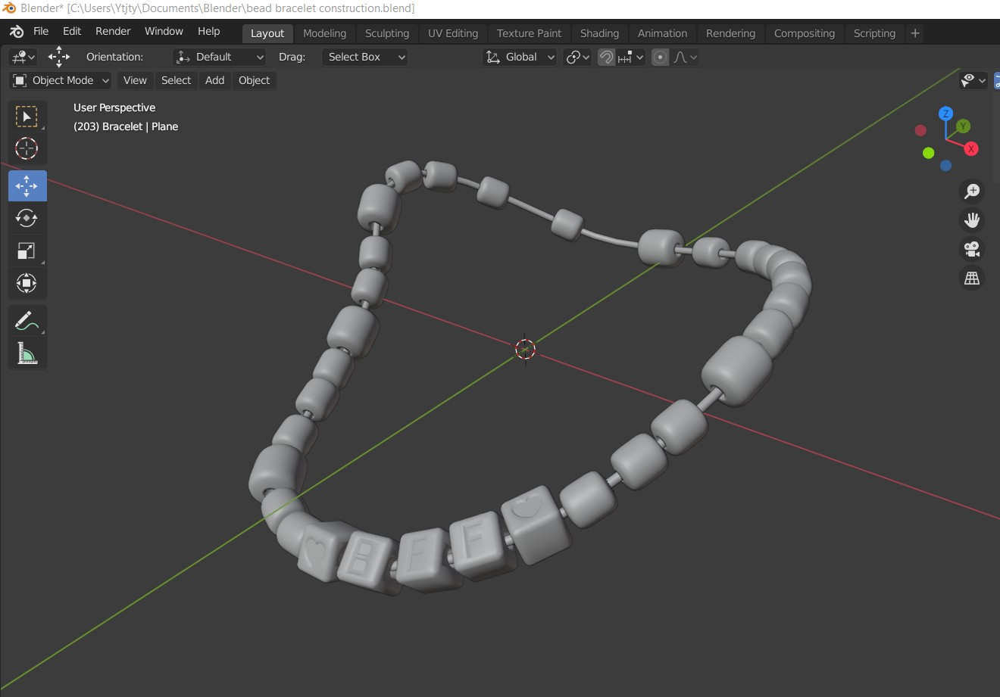

Where Are You?
Case Study
Deanna Mak
Monique Eng
Anna Dela Cruz
Michelle Lillo Meza
Deanna Mak
Monique Eng
Anna Dela Cruz
Michelle Lillo Meza
Where are you? is a transmedia narrative experience that aims to immerse our readers as they traverse through an important event in Robin’s life. The key points and flow of Robin’s story takes inspiration from Jason and the Argonauts, a treasure hunting story that follows Jason’s journey as he goes through many trials and tribulations to obtain the golden fleece for his king. Through his journey he solves different problems and gains new knowledge. This narrative framework was referenced when creating Robin’s adventure to find Sam. Users will travel through different websites and mediums to gather clues and see if Robin can find Sam. This unique experience uses the different websites and mediums to increase the immersion and enjoyment of the experience.
Stories can be lengthy, difficult to comprehend and boring especially a story that’s dated from thousands of years ago. These factors can impact our attention spans when consuming any content. Our main challenge while keeping those factors in mind was how could we make our narrative new and engaging? Thus our goal was to develop an appealing narrative by using today's technology in creative ways such as social media and QR codes to attract our audience. As well as produce a story that is relatable to current generations. As we are accustomed to fast-paced media and are attached to narratives that relate to our current life experiences.
The audience we had in mind when creating Where are you? were youth, from teens to people in their twenties who play “slice of life” video games. However, it can really be enjoyed by everyone of all ages who love stories. Whether they like to read novels or manga, Where are you? is just another way to enjoy narratives in a new, interactive format.
Our narrative requires a physical photo to interact with it. We would have dispersed copies of the photo around the Trafalgar campus of Sheridan College if not for the COVID pandemic. Consequently, our audience would have encompassed mainly Sheridan students and faculty, as they are the most likely to encounter the photo. Once they find it, hidden in library books, under keyboards and mouse pads, and placed in other areas around school, they can scan the QR code on the back, which will lead them to the beginning of our narrative: the main website. We hope, with the help of social media, users would share the physical photo with others so Where are you? could reach even larger audiences.
For the project the group divided project deliverables according to each group members skills and abilities. These were determined by using a skills assessment and having group members mention what parts of the project they wanted to take on. For the main illustrations of the project the group analyzed art pieces from each member and unanimously decided on what style suited the project.
The main constraints the group faced was not being able to collaborate in person. Due to the pandemic, we weren’t able to properly execute what we wanted to do for the physical interactions that were planned for the project. This also meant the group had to use Zoom as a way of communicating and collaborating on the project. The main issues with using Zoom were unstable internet connections, loud backgrounds, and limited call times.
The scope of the project was made with the idea that the project could take place on campus. This meant we wanted an accessible engagement from the audience, such as finding copies of the photo of Sam and Robin. As a group scope we also wanted to ensure we had all the deliverables specified in each project brief so that we could maximize the interaction that our audience would have with the project. The last scope set into place for the project was to ensure the story could be told from beginning to end with the correct number of arcs. This meant the story was considered in multiple ways such as creating a story that was easy or complex, would the audience be able to follow this story, and would the audience be able to understand what the story is trying to show them.
Our project would not have been successful without the contributions of every member. Because of the time we put in our first week together discussing our strengths and weaknesses, we assumed the most appropriate roles and responsibilities that fit our individual skills. This allowed each one of us to give our best efforts to the project and collaborate effectively. Without Deanna’s project management skills and passion for 3D modelling, without Michelle’s eye for visual design and gift of illustration, without Anna’s love of code and background in writing, and without Monique, the master of all trades who assisted everyone from code to 3d modelling, Where Are You? would not have been possible.
Below is a more in-depth look of our individual processes.
After our team discussed the main elements and plot points of our narrative, I was tasked with writing it. Writing the story from beginning to end without knowing the final details was a major challenge. Early on, I found it very difficult visualizing our end goals and imagining how we would implement the different technologies and platforms that were required. I was afraid to commit to certain plot elements without knowing how we would achieve it, or if it was even possible within our skill sets. Also, changing and retracting decisions was normal for us during the first couple of weeks. This made me hesitate to write because whatever I wrote was subject to change.
However, as the weeks progressed, our team began understanding the project requirements and our individual skills and limitations a lot better. Finalizing decisions became easier, which in turn, made me visualize the story more clearly and write it more confidently. I also learned that writing itself is a process, and constant revision and evolution is a necessary part.
When showing the main website to Steve for our Project 2 presentation, I noticed the result of answering the questions correctly was not very satisfying. Initially, when the user inputed the right answer, the page would abruptly jump straight to the next section. If the user wasn’t paying close attention, they wouldn’t know they did so because the change was so immediate. To fix this, instead of using window.location = ‘#next-section’, I switched to a timed scrollTop function. This allows the user to see the page scroll to the unlocked section for two seconds, making answering correctly more noticeable and rewarding.

I also added a CSS animation so that when the user unlocks a new chapter, the chapter titles slowly fade in instead of just appearing when the page loads.
I had a similar philosophy for incorrect answers. Before, it was hard to tell when you answered wrong because the “wrong” message appeared below the submit button. If the user didn’t scroll down far enough, they could miss it. So, I added an animation that momentarily changes the border of the input field to red as well.
Another microinteraction I coded was the appearance of the lock icons when the user hovers over locked chapters in the navigation bar. I felt it wasn’t enough to just make those chapters unclickable. Users could easily mistake that as a bug or website error. Adding the lock icons on hover is a clearer indication of locked chapters.
In an earlier version of Chapter 3, I didn’t like how the button that led to Robin’s room was placed above the question. Not only was it visually unappealing, but it would allow the user to skip over Robin’s room and go straight for the question. I addressed this issue by creating a function that hides the question until the user clicks on the button to Robin’s room. This forces the user to view Robin’s room first and answer the question after.
As I was coding and testing the questions, I realized just how specific the users’ answers had to be, and how this specificity could hinder their experience. For example, one of the questions is “What is Sam's old elementary school called?” The correct answer is Martin Grove, but the user may type multiple variations of that answer: Martin Grove School, Martin Grove Public School, etc. Although they are all technically correct, only Martin Grove will unlock the next section. Hinting the number of words per answer addresses this issue, and is a necessity due to the vague nature of the questions.

When coding the imitation of Facebook Messenger, I realized we didn’t have to limit our “dead ends” and diversions to words on a page or in the decoys of our social media profiles and posts; Interactions could be used as well, or at least, integral to overcoming them. The answer to one of the questions on the website can be found only through a specific interaction with the chat: clicking the input field again after the fifth message appears. However, I purposefully made the prompt for this specific interaction inconspicuous. The previous interactions prompt the user to click the input field by displaying text, but this specific secret interaction does not. Thus, the user could easily miss the interaction and consequently, reach a dead end.
My original idea was more straightforward: The user would click just once to launch the chat. But, as I got more comfortable with Javascript, I wanted to explore more interesting and complex interactions.
I wasn’t aware of how important responsiveness was until our project manager, Deanna, suggested making the site mobile responsive. Because I’ve always approached my previous coding projects as solely desktop interfaces, I struggled with it. However, it made me understand that responsiveness should always be a priority, not an afterthought—especially for this project since our users need to scan a QR code with their phones. If we had this “mobile-first” approach early on, writing media queries would have been a lot easier because the code written initially was not ideal for responsive design. Nonetheless, after making the site mobile responsive, I challenged myself further by writing more media queries. In total, I used three additional media query breakpoints so that our site was responsive on as many screen sizes as possible.
Michelle created the prototype of our physical artifact (the photo with the QR code) and took a picture of it because we couldn’t present it in person for Project 2. For the final version of the artifact, I was going to print it on cardstock and have it laminated so it resembled the glossiness of a real photograph. Fortunately, Steve saved me the trip to Staples when he recommended using Unity instead to create and present it. Because using Unity and Blender was not officially part of my role, I had to learn these softwares in a short amount of time. Once I did, the end result was worth it. In a prior version, I wrote a script that rotated the photo only when the user clicked and dragged it, but I felt that interaction wasn’t intuitive without instructions.
I changed the script so that the photo rotated automatically instead. Thus, the only interaction left was to click the button that led to the QR code. However, once I showed my teammates my work, Deanna informed me part of the text was cut from view on her screen.
Due to time constraints, I wasn’t able to make the scene responsive; Instead, I opted for the quickest solution: removing the text. Because we were going to present the physical artifact in class anyways, the text was not necessary.
When we finalized the story and its plot visual research was done to figure out the best art style for our narrative. Based on our themes of connection, determination, adventure etc. Rough colorful illustrations suited our concept for its overall playfulness. Sketches were developed for the main characters of the narrative. Most importantly Sam the friend that Robin the main character is searching for. At first I looked into imitating the style of the game Florence, however during the coloring stages I was unsatisfied with the simplistic style and decided to go more detailed. Hence the current look of our illustrations, there were several iterations to her at various ages until a final design was confirmed.
Once characters were confirmed, we decided on a format for our concept which would be a website. The group hashed out wireframes and I created a style guide for the overall design. We decided to avoid an infinite scroll format and do individual pages instead. As we thought it would be a better interaction for people. We also thought about the design of smaller interactions such as adding a hover state to the sidebar.
We favoured the warm toned theme as it looked similar to a journal. Which we thought fit with adventure and nostalgia, a feeling we wanted to convey to the audience. Plus it was less harsh on the assets and easier to read.
While text was applied, illustrations were made and added to the wireframe. To keep the audience from being overwhelmed by heavy text, illustrations based on what was written were made alongside it to keep their attention. Several images were made for our twitter account for our dead ends to keep it consistent and less obvious as the answer key was also an illustrated image. The typography was formatted to replicate a diary entry to keep the journal look consistent. Minor adjustments were done, taking into consideration the spacing and readability of the content. The main challenge was to keep the overall design and illustrations consistent with each other and fit well in the layout. Later on we added a title page to introduce the audience to what they will be interacting with instead of forcing them to the first chapter without warning.
Overall, with the time given we were satisfied with the outcome of the design choices we made. Since we managed to complete everything in time. As well as seeing the design respond well in code I would consider it successful.
When it came to the creation of 3D elements, a visual direction was already decided for the most part with rough sketches and chosen colour palettes. All 3D modeling and 3D elements for this component was created in Blender and imported into Unity. After a general shape of the 3D objects were completed, materials were also applied in Blender before the Unity migration. At this point, the colours of major elements of the room such as the bed or the bookshelf were confirmed before moving forward. 
During the migration of the objects from Blender to Unity, the scale of the objects was examined to ensure that the environment would look realistic for the capsule player. Existing assets were imported into Unity to test the scale. This step allowed for the scale of all objects to be adjusted in Blender prior to the import.
In Unity, the several assets were brought in to slowly form the room. Since materials appeared slightly different in Unity in comparison to Blender, some minor changes were also implemented to increase general visual appeal of all assets. Using provided tutorials, a player was created. The player is given movement capabilities as well as camera movement capabilities to allow for the searching of the bracelet. After all 3D elements have been successfully added, the lighting of the room was adjusted to make the environment appear more realistic.